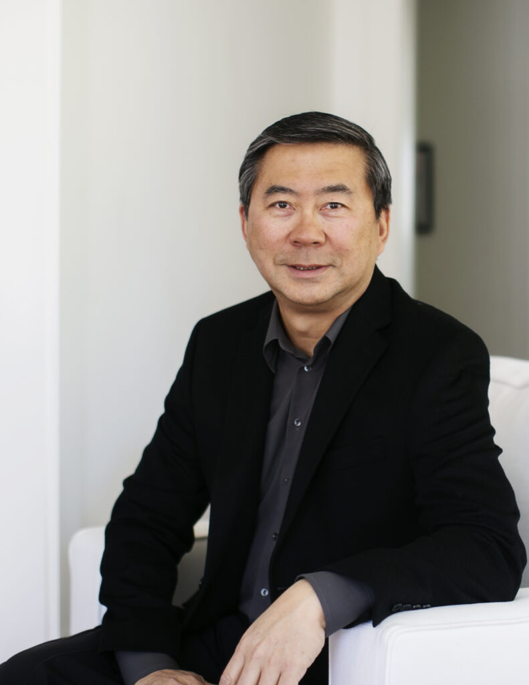
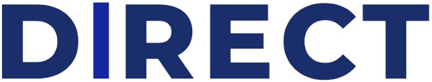

A career in venture capital.
Teaching successful individuals how professional investors create wealth through ownership of private enterprises.

Over two decades, Tuff built Seraph Group into a global investment firm. From it grew Direct, a platform for investing one company at a time, and the Seraph Research Foundation, which teaches how private markets work. Now Direct is coming to investors region by region, through local cohorts.
Tuff is the founder, CEO and Managing Partner of Seraph Group, the global investment firm behind two decades of his work. It is the engine of deal flow, diligence and discipline he draws on, and the home of the Structured Angel Fund™.
Visit seraphgroup.net ↗Accredited members invest alongside the principals in individual companies, one deal at a time. No middleman, with the SPV and back office handled for them.
vc.direct ↗The educational arm, teaching how private-market investing actually works, for newcomers and seasoned investors alike.
seraphresearchfoundation.org ↗
CohortsLocal cohorts of Direct. Each one gathers investors in its own region to meet, review companies and invest together, while drawing on the full national network.
Tuff Yen is a career venture capitalist who has personally led more than $225 million of investment into over 200 early-stage technology companies.
He began as a bioengineer at Genentech and Amgen, two of the world's leading biotechnology companies. After earning his MBA from the Yale School of Management, he entered venture capital at Chemical Venture Partners, the private equity arm of Chemical Bank (now JPMorgan), before joining Hambrecht & Quist's affiliated fund in San Francisco.
In 2004 he founded Seraph Group and invented the Structured Angel Fund™ (SAF™). Its network now spans more than 400 investors in over 135 cities across six continents.
In 2004, Tuff invented the Structured Angel Fund™ (SAF™), a proprietary venture fund structure that gives angel investors and family offices the access, discipline and diversification of an institutional venture capital firm, without the institution.
It is the same philosophy behind Direct and its regional cohorts today: learn how the professionals do it, then put that knowledge to work, together.
Into the same private rounds institutional funds compete for.
Professional sourcing, diligence and deal structure on every position.
A portfolio wide enough to catch the rare, outsized winner.
Most startups return little, and a rare few return everything. That is why disciplined investors build a diversified portfolio: enough quality shots to catch the outlier.
An ongoing circle, not a one-off class. Members meet in their region, review real companies and invest together through Direct. Whether you invest is always your choice.
See the cohorts →The deal-by-deal co-investment platform for accredited investors. Back individual companies alongside the principals, with the SPV and back office handled for you.
Visit vc.direct ↗For questions about Direct or a regional cohort, starting a cohort in your region, or general inquiries.